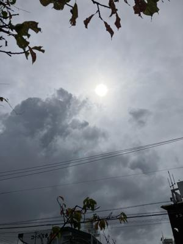
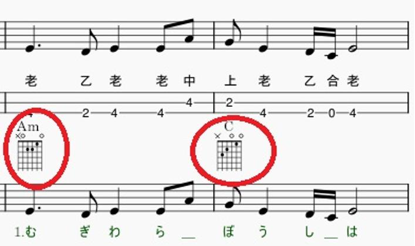
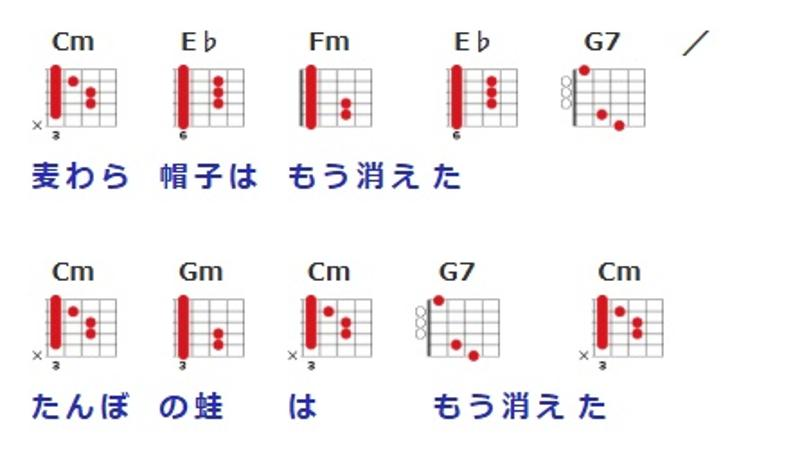

うるがいの話 ある日
最新: ギターのタブ譜【うるがいの話 ある日】とは 一日だけのプログです
『うるがいの話』の最新一日だけのプログで、通信料が少なく経済的だ。カニの画像をクリックすると全ての日付が載る『うるがいの話』サイトを表示します
|
|
【うるがいの話】 うるがい(ｳﾙｶﾞｲ urugai)とは、『もずくがに』の名前でとても大きくなります。 |
|---|---|
|
|
【カミマヤーの話】 猫のことを方言でマヤーといいます。カミマヤー（kamimayaa）とは、神の猫のことです。 |
|
【たながぁの音楽】 たながぁ（ﾀﾅｶﾞｰ tanagaa）とは手長えびのことで、何種類かあり大きいのは車 エビぐらいになります。 |

|
【ぶながぁの話】 ぶながぁ(ﾌﾞﾅｶﾞｰ bunagaa)とは、赤い髪の毛、赤い身体、そして身長は１ｍ２０ｃｍ ぐらい、川の蟹を食べているの目撃された。場所は沖縄県国頭郡大宜味村のと ある村僕の隣近所に住んでいる爺さんから、聞いた話です。 |
|
|
【ギーマの話】 ギーマ(giima)とは、山原の里山に咲くスズランに似た、 花を付けます。実は食べられます、 気が付くと口の周りが紫になっています。 |
2025年07月22日 (火）ギターのタブ譜
16:41

そもそも工工四っているのかしら？と思っていたが、私も楽譜を見
ずタブ譜で演奏していることに気が付いた。なるほどと納得する。
タブ譜とは、ギターやベースのような弦楽器の楽譜を解りやすく記
述した譜面です。タブ譜を使用すると、どの弦を弾くのか、どのフ
レットを押さえればいいのかなどが簡単に理解できるため、曲を素
早く習得することができます。そう、ギターのコード譜によく似た
ものだと考えてください。
私が、弾いているクラシックギターの楽譜。これ弾けるのですよ
コード譜とは、押さえるコード名が歌詞の上に記されているもので
す。コード弾きで弾き語りをする方にお勧めのものです。
ユーチューブ動画にアップした『夏休み』、ギターのコードがある

因みに、ギタコードと『夏休み』を検索すると、歌詞とギタコード
があるので、これで演奏する（詳細は割愛）

なお、『夏休み』の工工四(pdf)は これです
いま、このサイトが容量オバーになってメンテナンスできない状態
なお、補聴器をつけてギターを弾くとあれ！、いつものギターの音
じゃない。ま、そのうち慣れてくるのでしょう。